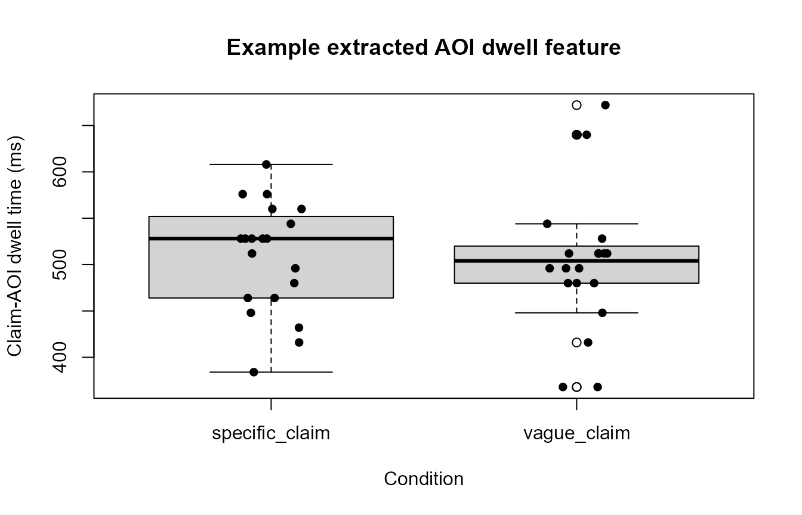
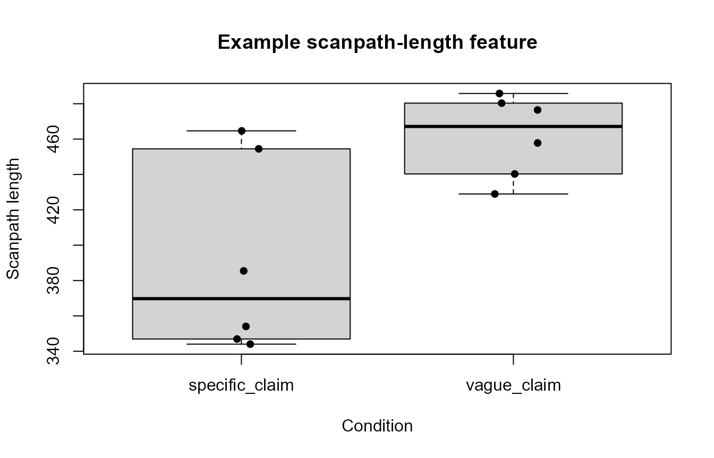

Metric extraction and model-boundary guidance
Source:vignettes/articles/metric-extraction-model-boundaries.Rmd
metric-extraction-model-boundaries.RmdThis article presents a conservative metric-to-model workflow:
- define the raw observation unit;
- extract a transparent metric;
- inspect its scale and distribution;
- select a compatible statistical family;
- account for the study’s hierarchical structure;
- keep interpretation within the limits of the measure.
Start from the metric rather than the preferred model
families <- recommend_gazepoint_model_family()
families[
families$metric %in% c(
"fixation_duration",
"dwell_time",
"fixation_count",
"aoi_proportion",
"scanpath_length",
"convex_hull_area",
"pupil_timecourse"
),
,
drop = FALSE
]
#> metric data_property
#> 1 fixation_duration positive, right-skewed
#> 2 dwell_time positive, right-skewed
#> 3 fixation_count non-negative count, often overdispersed
#> 4 aoi_proportion bounded proportion between 0 and 1
#> 6 pupil_timecourse continuous time-series, often autocorrelated
#> 11 scanpath_length positive, right-skewed
#> 12 convex_hull_area positive, right-skewed
#> recommended_family
#> 1 lognormal or gamma
#> 2 lognormal or gamma
#> 3 negative binomial or Poisson
#> 4 beta or binomial after denominator construction
#> 6 Gaussian with smooth time terms; consider AR(1) sensitivity
#> 11 gamma or lognormal
#> 12 gamma or lognormal
#> common_transform
#> 1 log(duration_ms)
#> 2 log(dwell_ms)
#> 3 none; model as count
#> 4 logit after boundary adjustment if needed
#> 6 baseline correction, smoothing, or time-course model
#> 11 log(scanpath_length)
#> 12 log(area)
#> notes
#> 1 Avoid Gaussian models on raw fixation durations.
#> 2 Avoid Gaussian models on raw dwell times when strongly skewed.
#> 3 Check overdispersion before using Poisson models.
#> 4 Values exactly 0 or 1 require adjustment or a binomial formulation.
#> 6 Do not use repeated pointwise tests without accounting for time dependence.
#> 11 Interpret as search extent or inefficiency depending on task.
#> 12 Requires at least three valid spatial points per trial.The recommendation table does not remove the need to inspect the observed distribution. A duration outcome can contain structural zeros, truncation, censoring, or participant-specific scales that require additional decisions.
Extract simple AOI dwell summaries
The following example simulates sample-level AOI assignments. Each row represents a 16-ms sample.
samples <- expand.grid(
subject = paste0(
"S",
sprintf("%02d", 1:10)
),
trial = 1:4,
sample = 1:80
)
samples$condition <- ifelse(
samples$trial %% 2 == 0,
"specific_claim",
"vague_claim"
)
samples$time_ms <-
samples$sample * 16
samples$aoi <- sample(
c(
"source_label",
"claim_text",
"evidence_panel",
"other"
),
size = nrow(samples),
replace = TRUE,
prob = c(
0.20,
0.38,
0.22,
0.20
)
)
head(samples)
#> subject trial sample condition time_ms aoi
#> 1 S01 1 1 vague_claim 16 claim_text
#> 2 S02 1 1 vague_claim 16 other
#> 3 S03 1 1 vague_claim 16 claim_text
#> 4 S04 1 1 vague_claim 16 claim_text
#> 5 S05 1 1 vague_claim 16 claim_text
#> 6 S06 1 1 vague_claim 16 otherAOI dwell is calculated as the number of assigned samples multiplied by the sample interval.
samples$sample_duration_ms <- 16
aoi_dwell <- aggregate(
sample_duration_ms ~
subject +
trial +
condition +
aoi,
data = samples,
FUN = sum
)
names(aoi_dwell)[
names(aoi_dwell) == "sample_duration_ms"
] <- "dwell_ms"
head(aoi_dwell)
#> subject trial condition aoi dwell_ms
#> 1 S01 2 specific_claim claim_text 576
#> 2 S02 2 specific_claim claim_text 528
#> 3 S03 2 specific_claim claim_text 512
#> 4 S04 2 specific_claim claim_text 448
#> 5 S05 2 specific_claim claim_text 464
#> 6 S06 2 specific_claim claim_text 528
claim_dwell <- aoi_dwell[
aoi_dwell$aoi == "claim_text",
,
drop = FALSE
]
boxplot(
dwell_ms ~ condition,
data = claim_dwell,
xlab = "Condition",
ylab = "Claim-AOI dwell time (ms)",
main = "Example extracted AOI dwell feature"
)
stripchart(
dwell_ms ~ condition,
data = claim_dwell,
vertical = TRUE,
method = "jitter",
pch = 16,
add = TRUE
)
A difference in claim-AOI dwell supports a statement about time allocated to that AOI under the specified denominator and inclusion rules. It does not, by itself, establish deeper scrutiny, comprehension, skepticism, memory, or critical evaluation.
Scanpath geometry is a descriptive movement feature
set.seed(303)
scanpath <- do.call(
rbind,
lapply(
1:12,
function(trial_id) {
n <- 30
data.frame(
subject = paste0(
"S",
sprintf(
"%02d",
ceiling(trial_id / 3)
)
),
trial = trial_id,
condition = ifelse(
trial_id %% 2 == 0,
"specific_claim",
"vague_claim"
),
time_ms = seq_len(n) * 40,
x = 450 +
cumsum(
rnorm(
n,
mean = ifelse(
trial_id %% 2 == 0,
8,
12
),
sd = 10
)
),
y = 320 +
cumsum(
rnorm(
n,
mean = 2,
sd = 8
)
)
)
}
)
)
scan_features <- compute_gazepoint_scanpath_geometry(
data = scanpath,
x = "x",
y = "y",
subject = "subject",
trial = "trial",
time = "time_ms",
condition = "condition"
)
head(scan_features)
#> subject trial n_points scanpath_length straight_line_distance
#> 1 S01 1 30 476.4939 389.7696
#> 2 S01 2 30 454.4967 317.3839
#> 3 S01 3 30 440.2903 378.3754
#> 4 S02 4 30 346.9367 148.3530
#> 5 S02 5 30 480.3459 346.7733
#> 6 S02 6 30 354.0494 185.7385
#> scanpath_efficiency convex_hull_area spatial_dispersion condition
#> 1 0.8179949 12627.906 100.96788 vague_claim
#> 2 0.6983194 7337.680 91.41255 specific_claim
#> 3 0.8593771 8197.196 101.32951 vague_claim
#> 4 0.4276083 5299.785 39.45527 specific_claim
#> 5 0.7219242 12783.166 99.64205 vague_claim
#> 6 0.5246119 6262.574 46.27858 specific_claim
trial_one <- scanpath[
scanpath$trial == 1,
,
drop = FALSE
]
plot(
trial_one$x,
trial_one$y,
type = "b",
pch = 16,
xlab = "Screen x-coordinate",
ylab = "Screen y-coordinate",
main = "Example scanpath geometry"
)
text(
trial_one$x[
c(
1,
nrow(trial_one)
)
],
trial_one$y[
c(
1,
nrow(trial_one)
)
],
labels = c(
"Start",
"End"
),
pos = c(
2,
4
)
)
boxplot(
scanpath_length ~ condition,
data = scan_features,
xlab = "Condition",
ylab = "Scanpath length",
main = "Example scanpath-length feature"
)
stripchart(
scanpath_length ~ condition,
data = scan_features,
vertical = TRUE,
method = "jitter",
pch = 16,
add = TRUE
)
Scanpath length, convex-hull area, dispersion, and efficiency describe spatial movement or search extent. Whether a longer path indicates exploration, inefficiency, uncertainty, task difficulty, or another process depends on the task and complementary evidence.
Pupil-response features require explicit baseline decisions
set.seed(404)
pupil <- expand.grid(
subject = paste0(
"S",
sprintf("%02d", 1:8)
),
trial = 1:4,
time_ms = seq(
-200,
900,
by = 50
)
)
pupil$condition <- ifelse(
pupil$trial %% 2 == 0,
"specific_claim",
"vague_claim"
)
pupil$pupil_mm <-
3 +
ifelse(
pupil$condition == "vague_claim",
0.10,
0.04
) *
exp(
-((pupil$time_ms - 400) / 250)^2
) +
rnorm(
nrow(pupil),
sd = 0.02
)
pupil_features <- summarize_gazepoint_pupil_response_features(
data = pupil,
pupil = "pupil_mm",
time = "time_ms",
subject = "subject",
trial = "trial",
baseline_window = c(
-200,
0
),
response_window = c(
0,
900
),
condition = "condition"
)
head(pupil_features)
#> subject trial baseline_mean peak_dilation latency_to_peak auc
#> 1 S01 1 3.017129 0.09460738 300 27.27325
#> 2 S02 1 3.001221 0.11195847 350 36.39739
#> 3 S03 1 3.005514 0.12043512 250 42.73219
#> 4 S04 1 3.008195 0.09886347 300 29.48953
#> 5 S05 1 3.002742 0.12137768 450 39.48836
#> 6 S06 1 3.013597 0.11157195 300 32.87113
#> missing_percent interpolated_percent condition
#> 1 0 NA vague_claim
#> 2 0 NA vague_claim
#> 3 0 NA vague_claim
#> 4 0 NA vague_claim
#> 5 0 NA vague_claim
#> 6 0 NA vague_claim
plot(
pupil_features$peak_dilation,
pupil_features$auc,
pch = 16,
xlab = "Peak dilation",
ylab = "Pupil-response AUC",
main = "Relationship between extracted pupil features"
)
abline(
stats::lm(
auc ~ peak_dilation,
data = pupil_features
),
lty = 2
)Peak dilation and area under the curve summarize different aspects of the same response trajectory. Their association does not make them interchangeable. The baseline window, response window, interpolation procedure, smoothing, luminance conditions, and missingness rules should be reported.
Metric-to-interpretation boundary table
interpretation_boundary <- data.frame(
metric = c(
"Fixation count",
"Fixation duration",
"AOI dwell time",
"Transition count",
"Scanpath length",
"Pupil dilation",
"Blink rate"
),
directly_supports = c(
"Number of detected fixations under the stated detection rule",
"Duration of detected fixation events",
"Time allocated to the specified AOI",
"Observed movement between defined AOIs",
"Spatial length of the observed gaze path",
"Change in measured pupil size under the stated preprocessing",
"Frequency of detected blink events per stated exposure"
),
does_not_independently_establish = c(
"Interest, comprehension, or preference",
"Deep processing or difficulty",
"Critical scrutiny or belief revision",
"A cognitive strategy or causal information integration",
"Confusion, exploration, or search inefficiency",
"A specific emotion, cognitive load, or arousal mechanism",
"Fatigue, stress, or disengagement"
),
stringsAsFactors = FALSE
)
knitr::kable(
interpretation_boundary,
align = c(
"l",
"l",
"l"
)
)| metric | directly_supports | does_not_independently_establish |
|---|---|---|
| Fixation count | Number of detected fixations under the stated detection rule | Interest, comprehension, or preference |
| Fixation duration | Duration of detected fixation events | Deep processing or difficulty |
| AOI dwell time | Time allocated to the specified AOI | Critical scrutiny or belief revision |
| Transition count | Observed movement between defined AOIs | A cognitive strategy or causal information integration |
| Scanpath length | Spatial length of the observed gaze path | Confusion, exploration, or search inefficiency |
| Pupil dilation | Change in measured pupil size under the stated preprocessing | A specific emotion, cognitive load, or arousal mechanism |
| Blink rate | Frequency of detected blink events per stated exposure | Fatigue, stress, or disengagement |
Model-boundary checklist
A defensible metric-to-model workflow should document:
- whether the input consists of raw samples, fixations, saccades, blinks, or trial-level summaries;
- the event-detection algorithm and thresholds;
- AOI definitions and overlap rules;
- sample interval or event-duration calculation;
- baseline and response windows;
- blink, artifact, interpolation, smoothing, and track-loss rules;
- denominator definitions for proportions and rates;
- the participant, item, trial, screen, and order structure;
- whether the outcome is positive continuous, count, bounded, binary, or a time course;
- the model family and link function;
- random effects or smooth terms;
- convergence, residual, overdispersion, and sensitivity diagnostics;
- the distinction between confirmatory, sensitivity, and exploratory results;
- the interpretation directly supported by the measurement.
Conservative reporting examples
Prefer:
Participants allocated more dwell time to the claim AOI in condition A than in condition B.
Avoid unless independently supported:
Participants scrutinized the claim more critically in condition A.
Prefer:
The pupil response was larger during the prespecified response window after baseline correction.
Avoid unless the design and complementary measures isolate the mechanism:
Condition A produced greater emotional arousal.
Prefer:
Scanpaths were longer and covered a larger spatial area.
Avoid without task-specific validation:
Participants were more confused.
Final boundary
Eye tracking and pupillometry provide valuable process measures. Their strength lies in measuring visual allocation, temporal dynamics, event sequences, spatial movement, and pupil change.
The most defensible workflow extracts those quantities transparently, models their actual statistical scale, reports preprocessing and uncertainty, and avoids converting an observed process measure into an unsupported latent mental state.